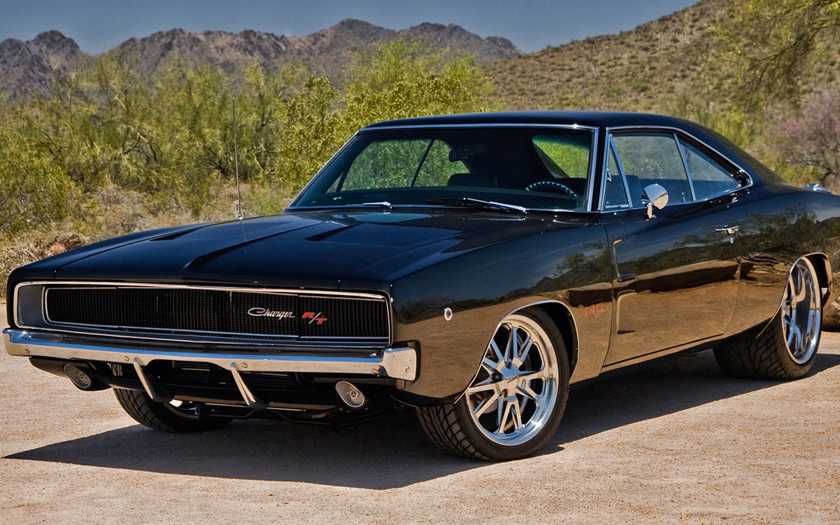

AutoBlog
-
O Novo Superesportivo Elétrico da Temporada
Publicado em 03 de Abril, 2026 • Test DriveTestamos o modelo que promete redefinir a aceleração de 0 a 100 km/h. Conheça a tecnologia que combina sustentabilidade e desempenho extremo...
Ler Análise Completa -

Ícones do Passado: Os Músculos Americanos dos Anos 70
Publicado em 01 de Abril, 2026 • ClássicosUma viagem no tempo para relembrar os motores V8 que dominaram as estradas e o cinema. Design agressivo e potência bruta em destaque.
Ver a Galeria -

Guia de Compra: SUVs Compactos Mais Econômicos
Publicado em 28 de Março, 2026 • DicasAnalisamos o consumo, custo de manutenção e espaço interno dos principais concorrentes do mercado nacional. Saiba qual vale o seu investimento.
Confira o Comparativo